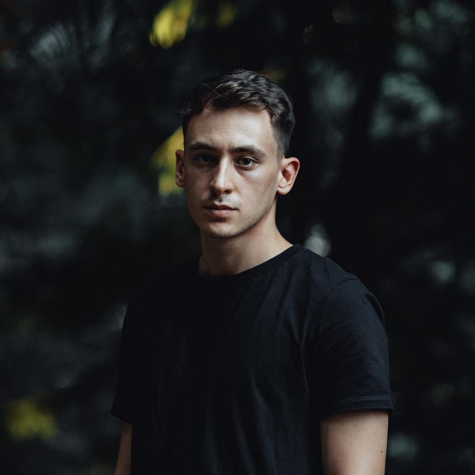
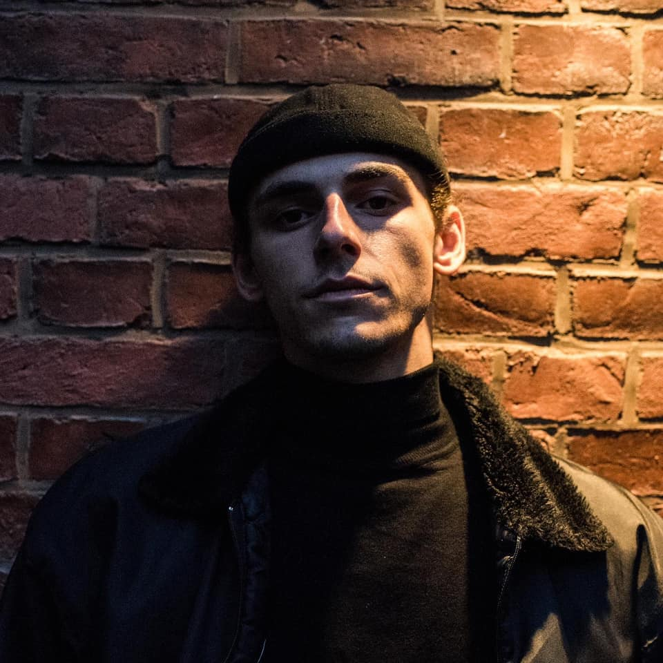

02.03.2023
Истинско техно от Метрополис
На 4ти март в Регионален Център за Съвременни Изкуства Топлоцентрала (зад НДК) Метрополис ще представи за първи път в България две от най-горещите имена на съвременното техно Nørbak и Quelza. В двете зали на пулта ще застанат Dj STEVEN, SHADE, ZIGGY, както и възпитаниците на Metropolis DJ Academy – BRICK, C-METRIK, HEXZEN, IGNIS, IKKI ØTTØ, MANOKO, PERO, SINNERMAN, STÉPH, TRAKIAN и VERTEX. „В трудното време, в което живеем техно културата е застрашена от комерсиалните имена и формати, които обръщат основно внимание на визуалната част на едно парти.“ споделя DJ Steven. „Но ние не забравяме откъде сме тръгнали и какво дължим на публиката. А и в крайна сметка да търсим най-актуалните артисти е част от това, което правим“ завършва той с усмивка. „Както и да дадем път на младите надежди от Българската електронна сцена. Те заслужават да изпитат емоцията на голямото парти но този път не като посетители, а като главни действащи лица така, както хората заслужават да чуят изпълненията им.“ добавя Ясен Петров. „Парти с безкомпромисни звук и визия като всички наши продукции“ допълва DJ Smurf. Нека сега ви запознаем с чуждите гости на Techno Meltdown, а за Българските участници ще напишем в следващата статия.
Nørbak – Ключовата му роля в съвременната техно култура е спечелена благодарение на изключителната му отдаденост и невероятната му трудоспособност. Тези качества, съчетани с дълбоките му познания за техно музиката от 90те години на миналия век и изключителния усет за модерен саунд дизайн го правят особено привлекателен като артист и за легендарни, и за авангардни лейбъли като Soma Records, Warm Up Recordings и Mord. Дебютният му албум Flesh to Ashes е чудесен пример за напредничавото му мислене и съчетава чудесно танцувалност за дансинга и експерименталността на IDM (Intelligent Dance Music). Впечатляващите му умения на пулта го правят чест гост на най-известните техно клубове в света като Tresor Берлин, Fuse Брюксел, Gare Porto Порто и още много места от Пекин до Лос Анджелис, Южна Америка и Далечния Изток.
Quelza – истинското му име е Лео е ярък представител на най-новата вълна авангардни техно артисти. Той е роден в Парижките предградия, от малък взима уроци по музика, но открива електронната сцена на Париж през 2013. И тогава музикалното му образование се изпълва със смисъл. В един свят, в който продуцентите на техно са повече от песъчинките по плажа на Копа Кабана, Лео успява да намери свои физиономия и стил, нещо рядко като четирилистна детелина. И тази детелина му осигурява договори с най-авангардните техно лейбъли като Mord, New Rhythmic, KSR, Hayes Collective, които са привлечени от крайно нехарактерната за стила чистота на звука и почти кинематографичния саунд дизайн на траковете му. Днес той живее в Берлин, за да усеща по-силно туптящото сърце на авангардния техно звук. Страхотната му техника и изключителен подбор на музика го правят чест гост DJ в култовите клубове Tresor, Berghain, и Griessmühle и му осигуряват сетове и на няколко техно фестивала това лято, между които е и Нидерландския Awakenings.